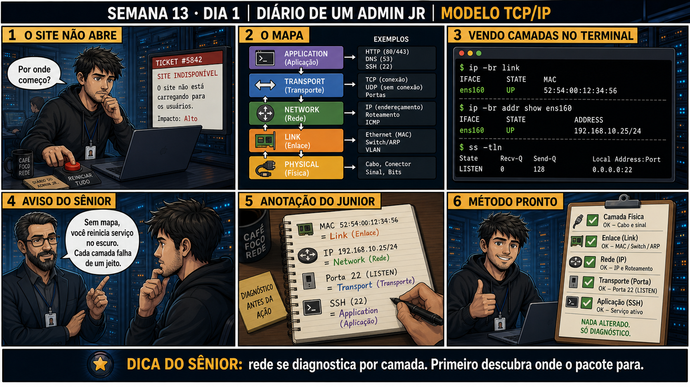

DIARIO DE UM ADMIN JR. | FASE 2 — REDES, DO IP AO DIAGNÓSTICO
🌐 FASE 2 COMEÇA AQUI — REDES
Você fechou a Fase 1 sabendo investigar um
sistema Linux sozinho. Agora o mesmo método (evidência antes de correção) se aplica a um domínio novo: a
rede que conecta esse sistema a tudo mais.
🔗 Conecta com a Fase 1 inteira: "Antes de alterar, observe" foi o lema dos
últimos três meses. Hoje você aprende ONDE observar numa rede — o modelo TCP/IP não é teoria decorada, é o
mapa que diz em qual camada seu diagnóstico deve começar.
🔓 Privilégio de hoje: diagnosticar rede por camada, não no escuro. Você ganha
o modelo mental central da Fase 2 inteira: cada camada (física, enlace, rede, transporte, aplicação) falha de
um jeito diferente, e reiniciar tudo sem saber qual camada falhou é o mesmo erro do reboot às cegas que você
já aprendeu a evitar.
Semana 13 · Dia 1 | Nível Júnior — Redes
Modelo TCP/IP
rede se diagnostica por camada — primeiro descubra onde o pacote para
ANTES DE ALTERAR, OBSERVE. DEPOIS DE ALTERAR, VALIDE.

1. O chamado
Ticket #5842: "Site indisponível. O site não está carregando para os usuários. Impacto:
Alto." O reflexo de "reiniciar tudo" ignora uma pergunta essencial: em qual das cinco camadas da rede o
problema realmente está? Sem esse mapa, você reinicia o serviço no escuro.
💡 Passa o mouse nas palavras destacadas pra ver uma dica rápida — clica se quiser a explicação completa com analogia.
2. O sênior te conta
Semana passada, outro ticket
"Site indisponível" chegou pro plantão às 22h de uma sexta. O técnico de plantão, sem mapa de camadas,
reiniciou o serviço web, depois o servidor inteiro — duas janelas de manutenção não programadas, cliente
puto, e o site continuou fora do ar. Eu peguei o ticket na manhã seguinte e rodei três comandos, nessa
ordem: ip -br link (interface UP, MAC ok), ip -br addr (IP configurado certo), ss -tln
(porta 80 não aparecia na lista — só a 22 de SSH). Três minutos, três camadas confirmadas, e a causa
ficou óbvia: nginx tinha caído durante um deploy da tarde anterior e ninguém percebeu porque SSH continuava
respondendo normalmente. systemctl start nginx resolveu. Nenhum reboot precisou acontecer.
O ponto que fica: reiniciar sem saber qual camada falhou não é "tentar de tudo" — é apostar. Enlace, rede,
transporte e aplicação falham de formas completamente diferentes, e só uma delas (aplicação, nesse caso)
precisava de ação. As outras três já estavam confirmadas saudáveis antes de eu tocar em qualquer coisa.
3. Decodificador de conceitos
Clica em qualquer termo pra ver a definição completa e uma analogia do dia a dia:
4. Ferramentas e leitura da evidência
Camada
Comando
O que confirma
Enlace
ip -br link
Interface ativa (UP) e endereço MAC.
Rede
ip -br addr show ens160
Endereço IP configurado na interface.
Transporte
ss -tln
Portas TCP escutando localmente.
$ ip -br link
IFACE STATE MAC
ens160 UP 52:54:00:12:34:56
$ ip -br addr show ens160
IFACE STATE ADDRESS
ens160 UP 192.168.10.25/24
$ ss -tln
State Recv-Q Send-Q Local Address:Port
LISTEN 0 128 0.0.0.0:22
5. Laboratório guiado — marca conforme for testando
Segurança: execute os testes apenas em VM descartável e confirme nomes de discos, hosts e arquivos antes de cada comando.
Ação: confirme a camada de enlace na VM de laboratório.
$ ip -br link
Resultado esperado: interface listada como UP, com endereço MAC visível.
Por quê: se a interface não estiver UP, nenhuma camada acima dela pode funcionar — é sempre o primeiro ponto a confirmar.
Cilada comum: confundir interface "UP" (administrativamente ligada) com "conectada" — cabo desconectado ainda pode mostrar UP dependendo do driver.
Ação: confirme a camada de rede na mesma interface.
$ ip -br addr show ens160
Resultado esperado: endereço IP e prefixo (ex: 192.168.10.25/24) visíveis.
Por quê: sem IP configurado, roteamento e portas não têm como funcionar, mesmo com enlace saudável.
Cilada comum: assumir que um IP presente está necessariamente correto — confira também a máscara/prefixo, não só a existência do endereço.
Ação: confirme a camada de transporte listando portas escutando.
$ ss -tln
Resultado esperado: lista de portas, incluindo ao menos a 22 (SSH), se estiver ativa.
Por quê: uma porta ausente na lista, com as camadas de baixo saudáveis, aponta direto pra causa na aplicação — sem precisar adivinhar.
Cilada comum: testar só com ping, que só valida a camada de rede — nunca confirma se a porta da aplicação está escutando.
🧑🏫 Aqui entra o Mentor (em breve): se uma porta esperada não aparecer na lista, este é o ponto onde o chat com o Sênior-IA vai ajudar a decidir se o problema é de serviço ou de configuração.
Ação: instale (ou simule) um serviço web simples e confirme a camada de aplicação.
$ ss -tln | grep :80
Resultado esperado: porta 80 (ou a porta do serviço) aparecendo em LISTEN.
Por quê: essa é a última camada — só faz sentido testá-la depois das três anteriores confirmadas, senão você não sabe se o erro é dela ou de baixo.
Cilada comum: reiniciar o serviço sem antes confirmar se ele nunca subiu, ou se subiu e caiu — os logs (journalctl -u nginx) dizem qual dos dois é.
Ação: documente, camada por camada, o que cada comando confirmou.
# enlace: UP, MAC ok
# rede: IP ok
# transporte: porta esperada ausente
# aplicação: causa confirmada aqui
Resultado esperado: mapa completo: enlace, rede, transporte, aplicação, cada um com sua evidência — reproduzindo o painel 5 da prancha de hoje.
Por quê: documentar por camada é o que transforma "reiniciei e funcionou" em "sei exatamente o que estava errado e por quê".
Cilada comum: pular a documentação achando que "já resolveu, não precisa mais" — é exatamente esse hábito que faz o mesmo problema voltar sem ninguém reconhecer o padrão.
6. Antes de ver as opções — tenta responder
🧠 Recall ativo: quais são as cinco camadas do modelo TCP/IP, da mais baixa (física) até a mais alta
(aplicação)?
Física
(cabo, sinal) →
Enlace
(MAC, switch) →
Rede
(IP, roteamento) →
Transporte
(TCP/UDP, portas) →
Aplicação
(HTTP, DNS, SSH). Cada camada tem sua própria ferramenta de diagnóstico.
QUESTÃO 1 de 3
7. Questão comentada — clica numa alternativa
Um site está indisponível. Você quer confirmar, na ordem certa, se a interface de
rede está ativa, se o IP está configurado, e se algum processo está escutando na porta esperada. Qual
sequência de comandos segue o modelo de camadas corretamente?
💡 Analogia do Sênior para Fixar: A pilha TCP/IP é como o envio de uma encomenda internacional: a Aplicação escreve a carta, o Transporte coloca na caixa com rastreio, a Rede cola o endereço postal e o Enlace despacha no caminhão físico.
QUESTÃO 2 de 3 — cenário de erro real
7.1 Você confirmou enlace OK, rede OK, e porta 22 (SSH) escutando — mas o site (porta 80) não aparece
em ss -tln
Cada camada abaixo da aplicação está confirmada como saudável.
O que essa evidência aponta como a causa mais provável?
💡 Analogia do Sênior para Fixar: Diferenciar camada 3 (IP) de camada 4 (Porta) é como o número do edifício vs o número do apartamento: o IP acha o prédio na rua, a porta acha qual serviço mora lá dentro.
QUESTÃO 3 de 3 — detalhe que confunde todo iniciante
7.2 "Se a camada física e de enlace estão OK, a rede inteira já está garantida?"
Um colega, satisfeito ao ver a interface UP com MAC correto, já quer declarar a rede "sem problemas".
Por que confirmar só as camadas mais baixas não é suficiente?
💡 Analogia do Sênior para Fixar: O protocolo IP ser 'best-effort' é como a carta simples no correio: ele faz o melhor esforço para entregar, mas quem garante a ordem e a confirmação de entrega é o TCP na camada superior.
8. Procedimento profissional
Diante de "site fora do ar", não reinicie nada antes de mapear a camada.
Confirme enlace com ip -br link (interface UP, MAC presente).
Confirme rede com ip -br addr (IP configurado corretamente).
Confirme transporte com ss -tln (porta esperada escutando).
Só então investigue a aplicação — cada camada confirmada elimina uma hipótese.
Prevenção
Transforme os três comandos de hoje num checklist fixo pra qualquer ticket de "serviço fora
do ar": enlace → rede → transporte → aplicação, nessa ordem, antes de qualquer reinicialização. Isso corta
o tempo de diagnóstico de minutos incertos pra segundos certos — e evita a manutenção não programada que
não resolve nada.
9. Validação e encerramento
Nenhuma reinicialização foi feita antes de mapear a camada afetada.
ip -br link, ip -br addr e ss -tln foram usados nessa ordem, subindo as camadas.
A causa foi localizada numa camada específica, não tratada como "a rede está com problema" genericamente.
Nada foi alterado — apenas observado.
Rollback e limites
Os três comandos de hoje (ip -br link, ip -br addr, ss -tln) são estritamente de
leitura — não existe rollback necessário. O cuidado real é resistir ao reflexo de "reiniciar tudo" antes de
saber qual camada específica está envolvida.
💡 Sobre repetição espaçada: "observe por camada antes de agir" é a mesma
disciplina da Semana 11 (mapear as etapas do boot antes de mudar algo) — agora aplicada à rede. O Anki vai
conectar os dois.
10. Resposta final
Alternativa correta: A. Nesta aula, a sequência certa foi ip -br link
→ ip -br addr → ss -tln, subindo as camadas em ordem. O ponto central do caso é este: rede se
diagnostica por camada — primeiro descubra onde o pacote para.
🔓 O que você desbloqueou hoje
Capacidade de mapear um problema de rede pela camada correta, sem reiniciar no
escuro. Amanhã você aprende a decifrar o que um endereço IP com máscara (CIDR) realmente revela sobre quais
máquinas conseguem se falar direto, e quais precisam de um roteador no meio.